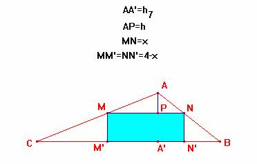

Problema 74
Dado un triángulo de lados 7 cm, 5 cm, y 3 cm, inscribir un rectángulo de perímetro 8 cm.
Lado del rectángulo paralelo al lado a=7

Con los datos del problema anterior, podemos establecer la siguiente relación entre los lados de los triángulos semejantes AMN y ABC
de donde obtenemos, usando DERIVE, los siguientes resultados:
;
;
Por otro lado se ha de verificar una relación más para que sea válida la solución anterior y es que:
si unimos M con N sale un triángulo semejante al inicial ABC y, por tanto:
igualdad que se puede comprobar que es cierta e igual a
Forma de construir el rectángulo de perímetro igual a 8.
Teniendo en cuenta la razón de semejanza entre AMN y ABC
segmento que podemos construir sin ninguna dificultad.
Nota. No existen más soluciones que ésta ya que en los demás casos si queremos que el lado del rectángulo inscrito sea paralelo a alguno de los lados b y c, por el hecho de ser el ángulo A obtuso (=120º), al trazar la perpendicular desde un punto del lado AB(AC) hasta el lado AC (AB) corta en la prolongación del lado respectivo.